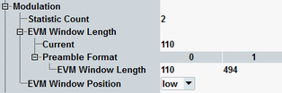

The following parameters configure the modulation settings of the NB-IoT NPRACH measurement.

Defines the number of measurement intervals per measurement cycle (statistics cycle, single-shot measurement). This value is also relevant for continuous measurements, because the averaging procedures depend on the statistic count.
For single-preamble modulation measurements, the measurement interval is completed when the R&S CMW has measured one full preamble (four symbol groups). The preamble length depends on the preamble format, see "NB-IoT Preamble Structure".
For multi-preamble measurements, the measurement interval is completed when the configured number of preambles has been measured, see "Number of Preambles".
The measurement provides independent statistic counts for modulation results and power dynamics results. In single-shot mode and with a shorter modulation statistic count, the modulation evaluation is stopped while the R&S CMW still continues providing new power dynamics results.
Remote command:Length of the EVM window in samples. The standard (3GPP TS 36.101, annex F) specifies the window length as a function of the preamble format.
The R&S CMW uses the "Current" value. This value is linked to the value in the table, corresponding to the current preamble format.
The window length defines the two sets of "l / h" modulation quantities in the result tables; see "Calculation of Modulation Results".
The minimum value of one FFT symbol means that EVMh = EVMl.
Remote command:Position of the EVM window used for calculation of the trace results. While result tables show both the results for low and high EVM window position, the diagram results are only determined for the selected window position.
Remote command: